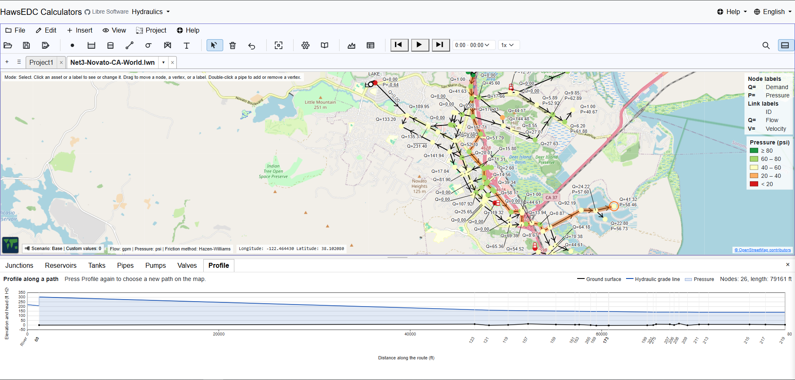
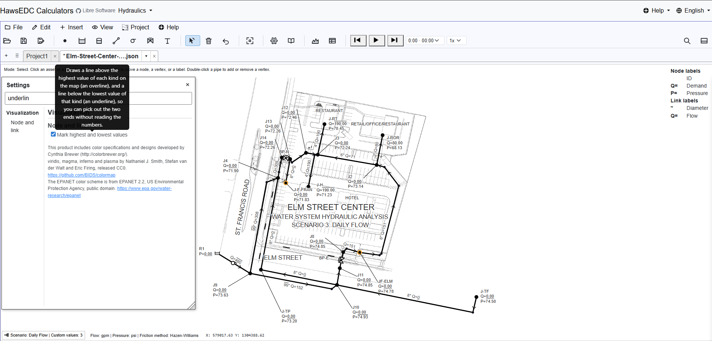
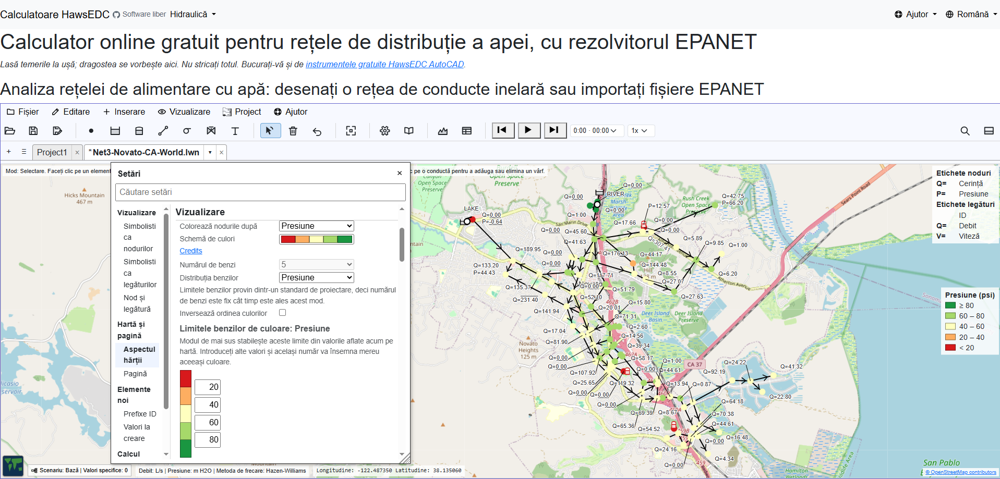

Advisors
How should a piece of software be owned by the people who depend on it? We do not know yet. There is no foundation, no board and no governing document; that is precisely why we are asking before writing one.
A community-owned project, built in the open
Water network design and management software for everybody everywhere.
Looking for stakeholders, not for money. We are building this together, and the people who use it should own it. Come and tell us what it has to be.
Free, no sign-up, runs in your browser · Open an example · See it working



There is nothing to buy here for now, no donation button, and everything you see is yours and ours together. We are asking for your time, your judgement, your experience, the bug you hit, the thing you need it to do next. What the project is short of is people who will steer it; and it is early enough that steering still changes where it goes.
How should a piece of software be owned by the people who depend on it? We do not know yet. There is no foundation, no board and no governing document; that is precisely why we are asking before writing one.
The most useful thing anyone sends us is a network that behaves in a way you did not expect. Send the model and what you expected; that is a complete report.
People who model networks all day know what is missing better than we do. Tell us what you need it to do, in the order you need it. A wish list is a specification.
Water systems get designed and run by organisations without a software budget. If that is you, we want to hear what stands between your engineers and a model they can actually use.
If the answer to a question is “we have not decided that yet,” we would rather say so and hear from you than publish a plan nobody outside the project has read.
If you came here wanting a water network model rather than a project to join: it is built, it is free, and you can open it right now. It solves, it draws, and it publishes a map you can hand to somebody.
Junctions, reservoirs, tanks, pipes, pumps and valves, placed on a map. Put it on real ground with a street or satellite basemap behind it, or keep it schematic. Open an EPANET .inp or .net file and it tells you every difference it found rather than dropping anything quietly. Write an .inp back out and every number you did not change comes back character for character.
Pressures and flows from the global gradient method, or from the EPANET engine itself running in your browser. Solve one instant, or run a whole day, with demand patterns, simple controls, tanks that fill and drain, and a transport that steps through the run. Colour the map by pressure, flow, velocity or head loss, in any of 41 colour ramps.
Labels you control. Drag one where you want it, set what it says, and it stays there, with leader lines that follow. The point is an exhibit somebody else can read, which is the part that otherwise gets redone by hand in a drawing program.
Being honest about the edges: development has followed an informal path of assumed most critical features, and there are a lot of unknown gaps between this application and EPANET. The gaps we do know: a run over time goes through the EPANET engine, and the built-in solver has no time dimension. Rule-based controls and water quality modelling are not built. And although you of course prefer working on your PC, it works also on a phone in tall mode.
English Español Português Français Türkçe Deutsch Italiano Русский Українська 中文 हिन्दी বাংলা العربية فارسی עברית اردو پښتو Bahasa Indonesia Kiswahili አማርኛ ភាសាខ្មែរ မြန်မာ Български Čeština Hrvatski Română Srpski
Twenty-seven languages is not every language, and the list here is how far the aim has got, not the end of it. What is here is here properly: every label, every tooltip, every warning is translated at the back end, not left for your browser to paper over an English program. The translations are AI-made, term by term against a hydraulics glossary, and corrected as people report what reads wrong. Your feedback improves every language, English included, in one long global conversation. Right-to-left languages lay out right-to-left.
This is the deepest single investment in the project, and it exists because the people who most need a free network solver are very often not working in English. If your language is here and reads badly, that is a bug report we want.
LibreWaterNet is GNU GPL v3 or later. There is no paid tier, no free tier that can be taken away later, and no waiting period before the source is yours. Fork it, run it on your own server, teach from it, ship it inside something else that is also free.
What is published under that licence stays published: this code cannot be made proprietary later, by anyone, including us. Nobody can promise what comes next — only that what you already have stays yours.
Your model stays on your machine. Every calculation runs in your own browser; nothing you draw is uploaded, and there is no account to make. Install it and it keeps working with the network cable out.
We ask you, each time, per feature. Nothing here reaches anyone else unless you turn on the feature that needs it, and each one asks separately. Today there are four: street map tiles from OpenStreetMap, satellite tiles from Mapbox, place-name search, which sends what you typed to OpenStreetMap’s geocoder, and the ground-elevation lookup, which sends the coordinates of your nodes to Mapbox. Those last two each have a consent question of their own. Stated here rather than on a policy page, because this is the sentence you need before you click, not after.